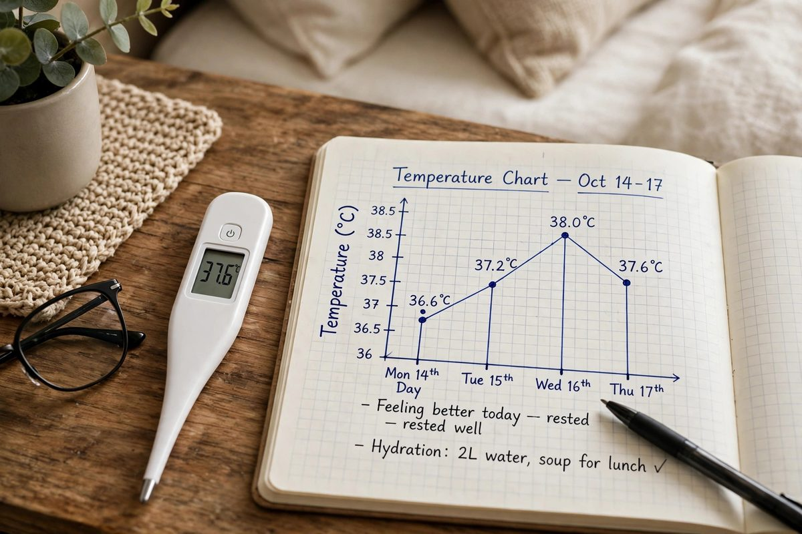

Tracking Basal Body Temperature
How to chart your morning temperature, read the rise after ovulation, and use the chart to time conception.
Basal body temperature, or BBT, is your body's temperature at complete rest, measured first thing in the morning before you get out of bed. It follows a clear pattern across the cycle: lower before ovulation, then higher afterwards, when progesterone rises. Charting it for a few months confirms whether and when you ovulate, and it costs nothing more than a thermometer and a minute each morning. This guide explains how to do it properly.
What you need to start
You need a basal thermometer, which shows two decimal places and is more sensitive than a standard fever thermometer. A normal thermometer works in a pinch, but the small changes you are looking for, about 0.3 to 0.5 degrees Celsius, are easier to see with the right tool. You also need a way to record the numbers: a paper chart, a notebook, or an app. Start on the first day of your period, and take your temperature at the same time every morning, before you speak, drink, or get up. Keep the thermometer by your bed so the habit is easy.
How to take a correct reading
Take your temperature immediately on waking, after at least three hours of sleep, and before any activity. Oral readings are the most common, but whatever method you choose, use the same one every day, because readings from different places are not comparable. Record the number straight away, along with anything that might affect it: a late night, alcohol the evening before, illness, or a disturbed sleep. These notes stop you from misreading a single odd number as a pattern.
Reading the chart
In the first half of the cycle, temperatures are usually lower, roughly 36.1 to 36.6 degrees Celsius. After ovulation, progesterone raises the temperature by about 0.3 to 0.5 degrees, and it stays higher until your period starts. The shift is the signal: look for a sustained rise over three days, not a single high reading. The day before the rise is usually the day of ovulation, which means the chart confirms ovulation after it has happened. It cannot predict ovulation in advance, so it is best used alongside mucus tracking or ovulation tests.
Common mistakes
The most common mistake is taking readings at different times, which makes the chart noisy and hard to read. Another is giving up after one confusing month: the first chart is often messy, and the pattern only becomes clear after two or three cycles. A third mistake is treating a single high reading as ovulation, when a restless night or a cold can raise your temperature for a day. Look for the sustained shift, ignore single-day blips, and remember that a chart that shows no clear rise over several months is itself useful information to share with a doctor.
Using BBT to time conception
Because the temperature rise comes after ovulation, BBT alone is not the best tool for timing intercourse in the current cycle. Its strength is learning your pattern: if your chart shows that you usually ovulate on day 15, you can plan around day 12 to 15 in future cycles. Combine the chart with cervical mucus, which changes before ovulation, and you have both a prediction and a confirmation. If you are trying to conceive, that combination is one of the most effective free methods available, and it gives a doctor clear evidence if you later seek advice.
A worked example of a temperature chart
Imagine a chart for a 28-day cycle. Days 1 to 13 show temperatures around 36.3 to 36.5 degrees, with small daily wobbles. On day 14, the temperature is still low, but on day 15 it rises to 36.8, and it stays at 36.7 to 36.9 for the next ten days, until the period starts and it falls again. The rise on day 15 confirms that ovulation happened around day 14, the day before the rise. The fertile window, in hindsight, was days 9 to 14, which is why the chart alone cannot time the current cycle: it tells you afterwards, not beforehand. Used with mucus tracking, which changes before ovulation, the two together give both a prediction and a confirmation, and after three charts you will know your own pattern.
Frequently Asked Questions
What temperature rise confirms ovulation?
A sustained rise of about 0.3 to 0.5 degrees Celsius over three days, staying high until your period, usually confirms ovulation happened.
Can BBT predict ovulation in advance?
No. The rise happens after ovulation, so BBT confirms it afterwards. Use mucus changes or ovulation tests to predict it.
Do I need a special thermometer?
A basal thermometer that reads to two decimal places is best, because the changes are small. A standard thermometer can work but shows less detail.